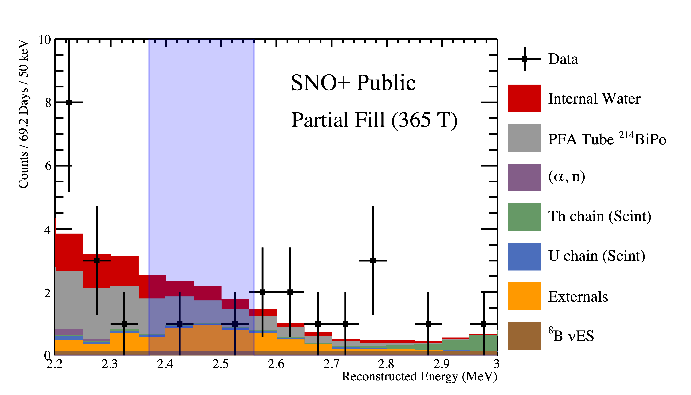
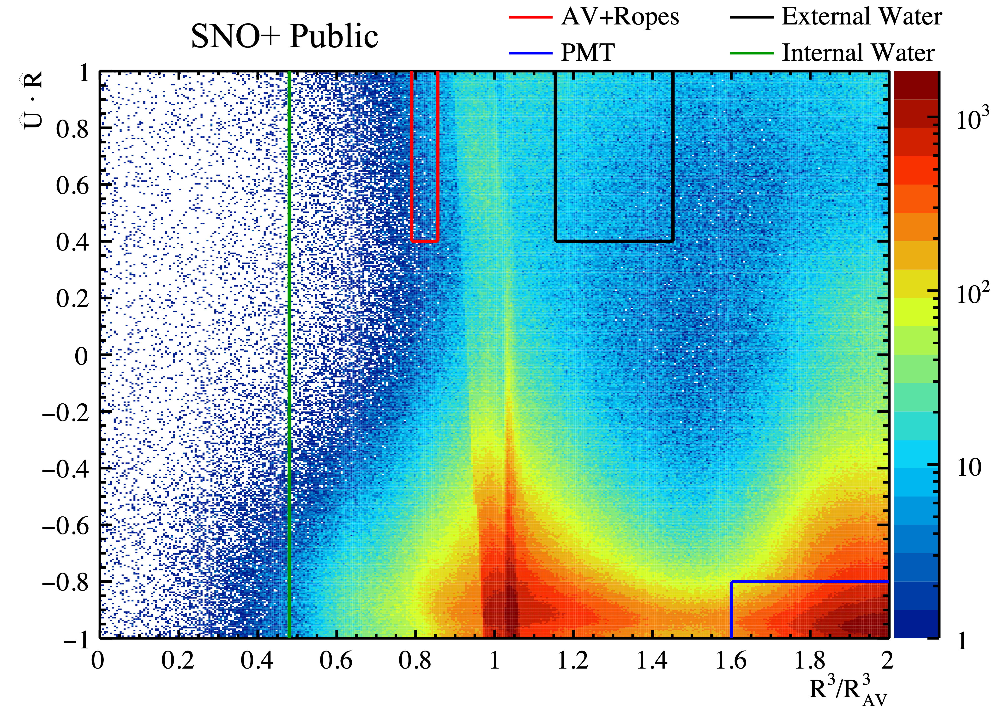

Constrained with classifier: oscillation parameters constrained to PDG2025 priors, (α, n)-IBD classifier used. PDF
Simplified spectra
Simplified versions of the unconstrained fit, suitable for thumbnails and small figures. They show the fit reactor IBD spectrum and the background-subtracted data.
Combined: all reactor IBD contributions as one spectrum. PDF
Separated: reactor IBD split into, from top to bottom, Bruce, Pickering + Darlington, and the rest of the world. PDF
Partial Fill ROI

Liquid scintillator background characterisation for the neutrinoless double beta decay region of interest (ROI) for the SNO+ partial fill, when the detector was filled with 365 tonnes of liquid scintillator (LAB + 0.6 g/L PPO) on top of 479 tonnes of ultrapure water.
SNO+ Water Phase External Backgrounds

Distribution of external background events from the SNO+ water phase as a function of reconstructed radius and u·r, where u·r is the dot product between the reconstructed event direction and the radial vector.